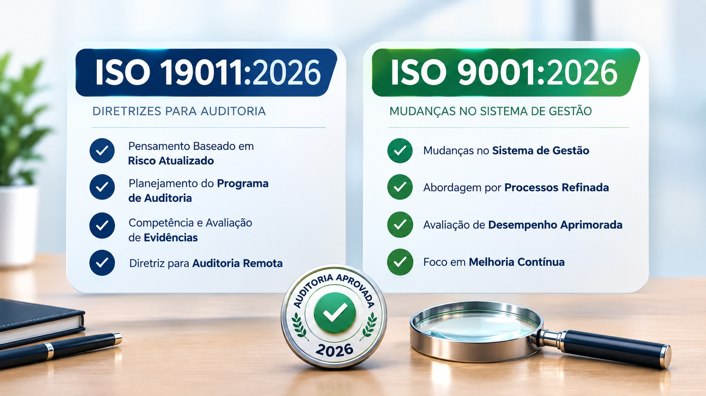

Equipe Calco • Conteúdo Auditado Calco • 27/09/2026

Se sua empresa tem ISO 9001, 14001, 45001 ou 27001, atenção: a regra de como você é auditado mudou esta semana. E não tem prazo para se adaptar.
A ISO 19011:2026 foi publicada e substitui a versão 2018. Não existe prazo de transição. Toda auditoria conduzida desde a publicação já deve seguir as novas diretrizes.
[ ] Seu programa foi atualizado para ISO 19011:2026?
[ ] Procedimento de auditoria remota com evidência rastreável?
[ ] Processos com IA têm mapeamento de risco?
[ ] Evidência de cultura da qualidade e comportamento ético?
[ ] Auditores requalificados?
Na Calco, já atualizamos tudo para a regra 2026: programa na versão 2026, roteiro de auditoria remota com evidência rastreável, checklist de IA e LGPD integrado, trilha de cultura e ética com evidência comportamental, e auditores requalificados.
Sobre quem escreveu
Equipe Calco.
Conteúdo auditado • Erro <0,000001 vs BCB